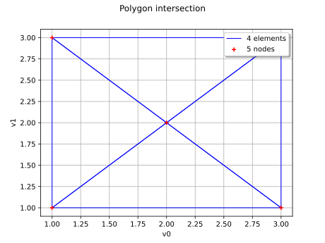

IntersectionMesher¶
(Source code, svg)

- class otmeshing.IntersectionMesher¶
Intersection meshing algorithm.
Methods
build(coll)Generate the mesh of the intersection.
buildConvex(coll)Generate the mesh of the intersection of convexes.
buildConvexSample(coll)Generate the vertices of the intersection of convexes.
buildCylinder(coll)Generate the mesh of the intersection of cylinders.
Accessor to the object's name.
getName()Accessor to the object's name.
Recompression flag accessor.
Simplicial decomposition flag accessor.
hasName()Test if the object is named.
setName(name)Accessor to the object's name.
setRecompress(recompress)Recompression flag accessor.
Simplicial decomposition flag accessor.
Examples
Triangulate a parallelogram:
>>> import otmeshing >>> import openturns as ot >>> mesher = otmeshing.IntersectionMesher() >>> dim = 2 >>> mesh1 = ot.IntervalMesher([1] * dim).build(ot.Interval([0.0] * dim, [3.0] * dim)) >>> mesh2 = ot.IntervalMesher([1] * dim).build(ot.Interval([1.0] * dim, [4.0] * dim)) >>> intersection = mesher.build([mesh1, mesh2])
- __init__()¶
- build(coll)¶
Generate the mesh of the intersection.
- Parameters:
- collsequence of
openturns.Mesh Input meshes.
- collsequence of
- Returns:
- mesh
openturns.Mesh The mesh of the intersection.
- mesh
- buildConvex(coll)¶
Generate the mesh of the intersection of convexes.
- Parameters:
- collsequence of
openturns.Mesh Input convex meshes.
- collsequence of
- Returns:
- mesh
openturns.Mesh The mesh of the intersection.
- mesh
- buildConvexSample(coll)¶
Generate the vertices of the intersection of convexes.
- Parameters:
- collsequence of
openturns.Sample Input convex vertices.
- collsequence of
- Returns:
- vertices
openturns.Sample The vertices of the intersection.
- vertices
- buildCylinder(coll)¶
Generate the mesh of the intersection of cylinders.
- Parameters:
- collsequence of
Cylinder Input cylinders.
- collsequence of
- Returns:
- mesh
openturns.Mesh The mesh of the intersection.
- mesh
- getClassName()¶
Accessor to the object’s name.
- Returns:
- class_namestr
The object class name (object.__class__.__name__).
- getName()¶
Accessor to the object’s name.
- Returns:
- namestr
The name of the object.
- getRecompress()¶
Recompression flag accessor.
- Returns:
- recompressbool
Whether to eliminate duplicate vertices.
- getUseSimplicesDecomposition()¶
Simplicial decomposition flag accessor.
- Returns:
- useSimplicesDecompositionbool
Whether to decompose the mesh by its simplices.
- hasName()¶
Test if the object is named.
- Returns:
- hasNamebool
True if the name is not empty.
- setName(name)¶
Accessor to the object’s name.
- Parameters:
- namestr
The name of the object.
- setRecompress(recompress)¶
Recompression flag accessor.
- Parameters:
- recompressbool
Whether to eliminate duplicate vertices.
- setUseSimplicesDecomposition(useSimplicesDecomposition)¶
Simplicial decomposition flag accessor.
- Parameters:
- useSimplicesDecompositionbool
Whether to decompose the mesh by its simplices.

{kind=link}